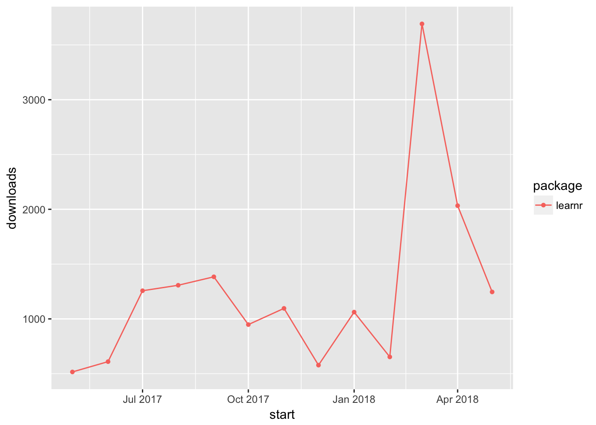

Chapter 8 Test miscellanous things
8.1 Install stackr with vignettes
Building vignettes takes some time. So if you are in a hurry, than just install stackr. You can still look at the vignettes in R help. The difference is: With build_vignettes = TRUE and then browseVignettes("stackr") you can look at the vignettes in your default browser. This is slightly more comfortable.
> devtools::install_github("dgrtwo/stackr", build_vignettes = TRUE)
> browseVignettes("stackr")8.2 Load several packages at once
The following code is part of a debate at SO with different suggestions. It seems to me, that all suggestions (utility packages, code examples) has some disadvantages:
- lapply: For me the best approach – it uses just
lapply. I have changedrequiretolibrarybecause of the arguments by Yihui. My lines now gives a error message and stops if one of the called packages is not installed. - easypackages: is not available on CRAN anymore, has very poor downloads.
- pacman: a very sophisticated programm, but – for me at least – to complex and therefore to much overhead.
- installed.packages: ipak.R This loads and installs missing packages. It is quite similar as
lappy-version, but – because of the if-condition – more complex. Additionally it is checking which packages are installed:
“This can be slow when thousands of packages are installed, so do not use this to find out if a named package is installed (use system.file or find.package) nor to find out if a package is usable (call require and check the return value) …”
So maybe the best would be to combine the lapply with the installled.packages version. But insted to use installled.packages I should use in the if-statement require, check for the return value and – if necessary – to install missing packages.
> x <- c("plyr", "psych", "tm")
> lapply(x, library, character.only = TRUE)8.3 How many downloads of a defined packages?
> library(dlstats)
> y <- cran_stats("learnr")
> ggplot(y, aes(start, downloads, group = package, color = package)) +
+ geom_line() + geom_point(aes(shape = package))
> # cranApp()8.4 Some data to remind
- How to find answers tagged with
rand not active since 6 month: Search
- What kind of actions are are allowed with
combine_url?
I have added timeline to the list!
8.5 Some experiments
Xie, Yihui. 2015. Dynamic Documents with R and Knitr. 2nd ed. Boca Raton, Florida: Chapman; Hall/CRC. http://yihui.name/knitr/.
———. 2018. Bookdown: Authoring Books and Technical Documents with R Markdown. https://CRAN.R-project.org/package=bookdown.